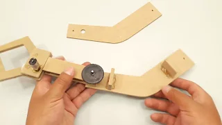

disfruta del video!

Materiales:
Papel piedra para hacer unas plantillas como al inicioMDF o algún otro material
Varios engranajes lo podemos reciclar
Alambres para los varios ejes
5 motor reductores
Pistola de silicona caliente
Pegamento instantáneo
Una batería
Cables
Circuito conmutador para invertir el giro de los motorcitos
Pegamento instantáneo
Una batería
Cables
Circuito conmutador para invertir el giro de los motorcitos
Trocitos de micro poroso para los ganchos
estaño y cautin
Circuito sencillo del proyecto
Lápiz
Taladro
Tijera
Sierra de mano
estaño y cautin
Circuito sencillo del proyecto
Lápiz
Taladro
Tijera
Sierra de mano